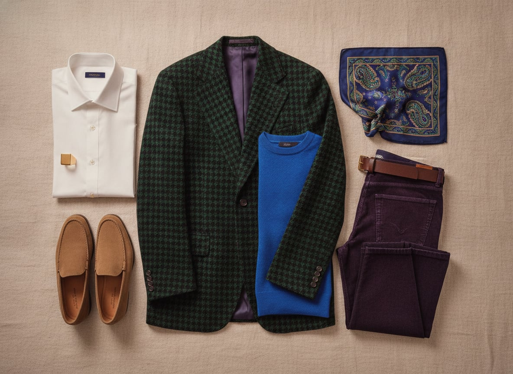

Dandyism's founding father, Beau Brummell, was actually a minimalist — he made his name stripping the aristocratic wardrobe down to dark wool and a perfect cravat. But the tradition he started, of treating dressing as a form of authorship, eventually produced his opposite: Oscar Wilde in velvet and lilies, the sharp-suited elders of Harlem's Sunday promenades, Carnaby Street's Peacock Revolution in the 1960s putting men in paisley and platform boots, and, more recently, houses like Gucci under Alessandro Michele arguing that more is not just more, it's braver.
What unites all of them is the conviction that clothing is a narrative medium, not a neutral one — that a jewel-toned jacket, an unlikely pattern combination, or an accessory piled on with real intention is a way of telling people who you are before you've spoken. The trademark isn't excess for its own sake; it's excess in service of a point of view.
It's a style for people who find restraint a little dishonest — who'd rather risk being remembered for something than blend safely into a room. There's genuine bravery in it, worn lightly: dressing this way means accepting that not everyone will get the reference, and deciding that's a fair trade for being unmistakably yourself.
From Oscar Wilde's velvet to Gucci's Alessandro Michele-era runways, the dandy's jacket has always argued that pattern and color are structural elements of a personality, not just decoration on top of one.
A real bold pattern at an accessible price, in a lower-grade cloth.
Shop this →Genuine wool or velvet with a considered, non-costume pattern.
Shop this →The two houses most associated with maximalist tailoring at the highest level.
Shop this →Where a Neapolitan pocket square is stuffed in carelessly, a dandy's is chosen to clash — a deliberate collision of pattern that turns a formal accessory into a small act of provocation.
Real silk at a genuine discount, if you're willing to hunt.
Shop this →House prints built specifically for clashing rather than matching.
Shop this →Rare or custom prints unavailable at lower tiers.
Shop this →Where most tailoring treats trousers as a supporting actor, the dandy wardrobe gives them equal billing — velvet, corduroy in unlikely colors, or a bold check cut with the same intention as the jacket.
Genuine wool or cotton velvet in colors most trouser makers won't touch.
Shop this →Rare jacquards and velvets cut to measure.
Shop this →A saturated emerald, burgundy, or cobalt knit gives the dandy wardrobe a way to be loud without tailoring at all — proof the aesthetic isn't only about the jacket.
The finest fiber the tier reaches, in colors most cashmere houses play safe on.
Shop this →Signet rings descend from actual seals used to stamp wax on official documents; the dandy wardrobe kept the object long after it lost the function, prizing it now purely as a small, permanent piece of self-authored heraldry.
Solid silver, unengraved or simply initialed.
Shop this →Better stone-setting or engraving work, still silver or vermeil.
Shop this →Solid gold, often with a family crest or monogram engraved to order.
Shop this →Linen in a bold print instead of wool, a straw or Panama hat leaned into rather than avoided, sandals if the moment allows it. The volume stays turned up regardless of temperature.
A statement coat -- fur-trimmed, velvet, or simply enormous -- over everything else, with gloves and a scarf chosen for pattern as much as warmth.
An umbrella becomes an accessory in its own right -- patterned, unusual, worth carrying even when not raining. A rubberized coat gets the same bold-color treatment as everything else.
The statement coat gets heavier without getting quieter -- shearling, bold plaid, or a rich jewel tone -- and the boots get chosen for how they look as much as how they perform.
Black tie is this wardrobe's actual home turf: velvet dinner jacket, an unconventional cummerbund or waistcoat, and jewelry that would read as too much anywhere else.
Venice during Carnevale, Marrakech for the color, and a costume party thrown by someone else, attended as though it were the whole point of the trip.
Oscar Wilde, obviously, plus biographies of anyone who ever caused a stir by what they wore — Beau Brummell, the Sitwells, early Bowie.
Glam-adjacent, theatrical pop — Bowie, Roxy Music, Prince at his most maximal — and a fondness for cabaret that borders on the literal.
Wallpaper with real pattern, a velvet sofa nobody's allowed to be too casual on, and at least one genuinely strange object bought purely because it made a good story.
Costume parties taken far more seriously than the invitation implied, collecting vintage accessories, and an audience, ideally, for most activities.